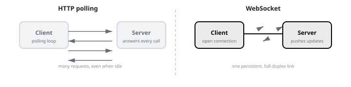
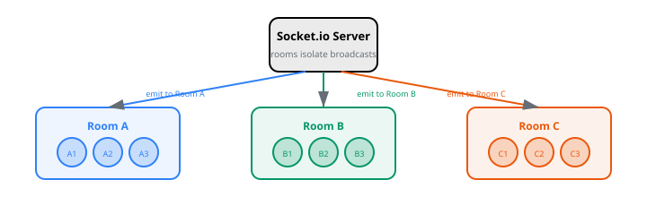
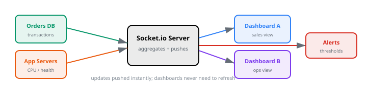
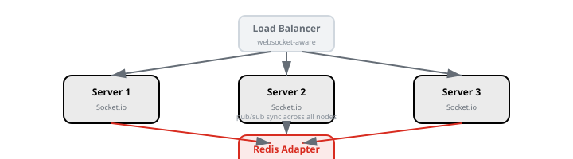

WebSockets & Real-Time Apps
Chapter 1
Introduction
WebSockets let servers push data to browsers instantly. They power live chat, dashboards, notifications, multiplayer games, and collaborative editors. This tutorial focuses on Socket.io, the most popular library for real-time web apps.
Before you start
- Comfortable with Node.js and Express.
- Basic JavaScript (events, callbacks, async/await).
- HTML/CSS for the client examples.
What you'll learn
- ✓ WebSocket handshake and lifecycle
- ✓ Socket.io events and rooms
- ✓ Building a group chat app
- ✓ Live dashboard with broadcast updates
- ✓ Presence and typing indicators
- ✓ Scaling with Redis adapter
More practice ideas
- Build a real-time collaborative whiteboard.
- Add live comments to a blog post.
- Create a stock-price ticker with historical chart updates.
Chapter 2
Polling vs WebSockets
Before WebSockets, the only way to get fresh data was the client repeatedly asking the server. This is called polling. It is simple but wasteful.
HTTP polling vs WebSocket push

HTTP polling
-
Client asks
GET /updatesevery few seconds. - Server responds even when nothing changed.
- High battery and bandwidth use on mobile.
- Good for simple dashboards with low freshness needs.
WebSockets
- One persistent, full-duplex connection.
- Server pushes data only when it changes.
- Lower latency and less overhead.
- Ideal for chat, live games, and collaboration.
When to use what
- Polling/SSE : one-way updates, simple infrastructure, serverless functions.
- WebSockets : two-way, low-latency, stateful conversations.
Chapter 3
Setup & First Socket
Socket.io wraps WebSockets and adds fallbacks for older browsers or restrictive networks. The API on both server and client is event-based.
# Server
mkdir realtime-chat cd realtime-chat
npm init -y
npm install
express socket.io
# Client (served by Express static files)
# Socket.io client is also available via CDN:
#// server.js
const express = require("express");
const { createServer } = require("http");
const { Server } = require("socket.io");
const app = express();
const httpServer = createServer(app);
const io = new Server(httpServer);
app.use(express.static("public"));
io.on("connection", (socket) => {
console.log("a user connected", socket.id);
socket.on("message", (msg) => {
io.emit("message", msg);
});
socket.on("disconnect", () => {
console.log("user disconnected");
});
});
httpServer.listen(3000, () => {
console.log("Server on http://localhost:3000");
});const socket = io(); socket.on('message', (msg) => { const item =
document.createElement('li'); item.textContent = msg;
document.getElementById('messages').appendChild(item); }); function send() {
const input = document.getElementById('input'); socket.emit('message',
input.value); input.value = ''; } SendCheckpoint
Create the server and client, open two browser tabs, and confirm messages sent from one tab appear in the other.
Chapter 4
Events & Rooms
Socket.io communication is organized around events. Rooms let you broadcast to subsets of clients without managing lists yourself.
Rooms isolate broadcast groups

// Join
a room socket.on('join-room', (room) => { socket.join(room);
socket.to(room).emit('notification', `${socket.id}
joined ${room}`);
}
);
// Broadcast
to everyone in the room except sender socket.on('room-message', ({ room,
text }
) => { socket.to(room).emit('room-message',
{ sender: socket.id,
text }
);
}
);
// Broadcast
to everyone in the room including sender io.to(room).emit('system', 'The room settings changed');
// Namespace
example: separate API and chat traffic const chatNamespace = io.of('/chat');
chatNamespace.on('connection', (socket) => { console.log('connected to /chat');
}
);
// Client
joins a namespace const chatSocket = io('/chat');Use cases for rooms
- Group chat channels.
- Document editing sessions.
- Multiplayer game lobbies.
- Tenant-isolated notifications.
Chapter 5
Real-World Chat
A chat app is the classic WebSockets example, but it is also genuinely useful. We will add usernames, timestamps, and a typing indicator.
// Server
io.on("connection", (socket) => {
let currentUser = null;
socket.on("join", (username) => {
currentUser = username;
socket.broadcast.emit(
"user joined",
`${username}
joined the chat`,
);
});
socket.on("chat message", ({ username, text }) => {
const message = { username, text, timestamp: new Date().toISOString() };
io.emit("chat message", message);
});
socket.on("typing", (username) => {
socket.broadcast.emit("typing", username);
});
socket.on("disconnect", () => {
if (currentUser) {
io.emit(
"user left",
`${currentUser}
left the chat`,
);
}
});
});// Client
const socket = io();
let typingTimeout;
function join() {
const username = document.getElementById("username").value;
socket.emit("join", username);
document.getElementById("login").style.display = "none";
document.getElementById("chat").style.display = "block";
}
function sendMessage() {
const input = document.getElementById("message");
socket.emit("chat message", {
username: document.getElementById("username").value,
text: input.value,
});
input.value = "";
}
const input = document.getElementById("message");
input.addEventListener("input", () => {
socket.emit("typing", document.getElementById("username").value);
clearTimeout(typingTimeout);
typingTimeout = setTimeout(() => {
document.getElementById("typing").textContent = "";
}, 1000);
});
socket.on("chat message", (msg) => {
const li = document.createElement("li");
const time = new Date(msg.timestamp).toLocaleTimeString();
li.textContent = `[${time}
] ${msg.username}: ${msg.text}`;
document.getElementById("messages").appendChild(li);
});
socket.on("typing", (username) => {
document.getElementById("typing").textContent = `${username}
is typing...`;
});Checkpoint
Add a username prompt, display join/leave notifications, and show a typing indicator that disappears after one second of inactivity.
Chapter 6
Live Dashboard
Dashboards often display metrics that change continuously: active users, order volume, server health. WebSockets push these updates without refreshing the page.
Metrics flow from source to dashboard

// Simulate
a data source function startMetricsEmitter(io)
{ setInterval(() => { const metrics = { activeUsers: Math.floor(Math.random() * 500) + 100,
ordersPerMinute: Math.floor(Math.random() * 30),
cpuPercent: Math.floor(Math.random() * 40) + 20,
timestamp: Date.now() }
;
io.emit('metrics',
metrics);
},
2000);
}
startMetricsEmitter(io);
// Client
renders live metrics socket.on('metrics', (metrics) => { document.getElementById('active-users').textContent = metrics.activeUsers;
document.getElementById('orders').textContent = metrics.ordersPerMinute;
document.getElementById('cpu').textContent = metrics.cpuPercent + '%';
}
);Real-world data sources
- Application logs aggregated into live error rates.
- IoT sensors reporting temperature, pressure, or location.
- E-commerce transactions feeding a real-time revenue chart.
- CI/CD pipelines broadcasting build status.
Chapter 7
Presence & Scaling
When you run multiple servers, a client might be connected to a different process than the one emitting an event. A Redis adapter lets all servers share the same Socket.io room state.
Redis adapter synchronizes multiple servers

const { Server } = require("socket.io");
const { createAdapter } = require("@socket.io/redis-adapter");
const { createClient } = require("redis");
const io = new Server(httpServer);
const pubClient = createClient({ url: "redis://localhost:6379" });
const subClient = pubClient.duplicate();
io.adapter(createAdapter(pubClient, subClient)); // Track online users in a room io.on('connection', async (socket) => { const room = 'support-room-1'; await socket.join(room); const sockets = await io.in(room).fetchSockets(); io.to(room).emit('presence', { count: sockets.length, users: sockets.map((s) => s.data.username).filter(Boolean) }); socket.on('disconnecting', async () => { const sockets = await io.in(room).fetchSockets(); io.to(room).emit('presence', { count: sockets.length - 1, users: sockets .filter((s) => s.id !== socket.id) .map((s) => s.data.username) .filter(Boolean) }); }); });Why scale WebSockets?
- Single Node.js processes can handle thousands of concurrent sockets.
- Beyond that, load balancers spread clients across many servers.
- Redis or another pub/sub adapter keeps broadcasts consistent.
Chapter 8
Security & Production
Real-time apps face the same threats as REST APIs, plus a few unique ones. Plan for authentication, rate limiting, and denial-of-service protection from day one.
Authenticate sockets
Use middleware to validate JWT tokens sent during the handshake.
const jwt = require("jsonwebtoken");
io.use((socket, next) => {
const token = socket.handshake.auth.token;
try {
const payload = jwt.verify(token, process.env.JWT_SECRET);
socket.userId = payload.userId;
next();
} catch (err) {
next(new Error("Authentication error"));
}
});Rate limit events
Limit how often a single socket can emit events to prevent spam.
const limits = new Map();
io.on("connection", (socket) => {
limits.set(socket.id, { count: 0, lastReset: Date.now() });
socket.on("chat message", (msg) => {
const limit = limits.get(socket.id);
if (Date.now() - limit.lastReset > 60000) {
limit.count = 0;
limit.lastReset = Date.now();
}
if (limit.count >= 30) return;
limit.count++;
io.emit("chat message", msg);
});
socket.on("disconnect", () => limits.delete(socket.id));
});Production checklist
-
Run behind HTTPS in production and use
transports: ['websocket']only if you control the network. - Set a connection timeout and heartbeat interval.
- Validate and sanitize every incoming event payload.
- Limit room size and message history stored in memory.
- Use Redis adapter when scaling beyond one process.
Chapter 9
Capstone: Live Support Chat
This capstone combines every Socket.io concept from this tutorial into one application: a customer support chat room.
1. What is this project?
A real-time support chat where visitors join a room, choose a display name, and exchange messages. Agents and customers see who is currently online, and new joiners can view recent chat history.
2. What it covers?
-
Express server with Socket.io and a static
public/folder. - Users pick a display name before joining.
- Messages are scoped to a support room ID.
- Show a list of users currently in the room.
- Typing indicator and join/leave system messages.
- Optional: store recent messages in Redis so new joiners see context.
3. How it is done?
The server uses Socket.io rooms and Redis to share state across tabs and refreshes. The core logic is shown below, followed by commands to run the capstone.
const express = require("express");
const { createServer } = require("http");
const { Server } = require("socket.io");
const Redis = require("ioredis");
const app = express();
const httpServer = createServer(app);
const io = new Server(httpServer);
const redis = new Redis({ host: "localhost", port: 6379 });
app.use(express.static("public"));
io.on("connection", (socket) => {
let roomId = null;
let username = null;
socket.on("join-room", async ({ room, user }) => {
roomId = room;
username = user;
await socket.join(room);
const history = await redis.lrange(`room:${room}`, 0, 49);
socket.emit("history", history.map(JSON.parse));
updatePresence(room);
socket.to(room).emit("system", `${user} joined the room`);
});
socket.on("chat message", async (text) => {
if (!roomId || !username) return;
const message = { username, text, timestamp: Date.now() };
await redis.lpush(`room:${roomId}`, JSON.stringify(message));
await redis.ltrim(`room:${roomId}`, 0, 99);
io.to(roomId).emit("chat message", message);
});
socket.on("typing", () => {
if (roomId) socket.to(roomId).emit("typing", username);
});
socket.on("disconnect", async () => {
if (roomId) {
socket.to(roomId).emit("system", `${username} left the room`);
await updatePresence(roomId);
}
});
async function updatePresence(room) {
const sockets = await io.in(room).fetchSockets();
const users = sockets
.map((s) => s.data.username || "guest")
.filter(Boolean);
io.to(room).emit("presence", { count: sockets.length, users });
}
});
httpServer.listen(3000, () =>
console.log("Support chat on http://localhost:3000"),
);Run the capstone
# 1. Start Redis
docker run -d --name
redis -p 6379:6379
redis:latest
# 2. Run the server
node support-chat.js
# 3. Open two browser tabs to the same room open http://localhost:3000?room=room-42
# 4. Send messages and watch presence, typing, and history update in real time4. What did we learn from this capstone project?
- How to use Socket.io rooms to scope messages to a specific group.
- How to track and broadcast presence data in real time.
- How to use Redis to store message history across reconnections.
- How to emit and handle join, leave, and typing events.
- How to combine Express, Socket.io, and Redis into one deployable app.
5. How can I enhance this project in the future?
- Add JWT authentication to separate agents from customers.
- Store all chat history in a real database like PostgreSQL instead of Redis.
- Add private direct messages between users.
- Build a React or Vue frontend with a polished UI.
- Scale across multiple servers with the Socket.io Redis adapter.
Checkpoint
Open two tabs with the same room ID, send messages, observe the user list update, and reload one tab to see recent history restored from Redis.